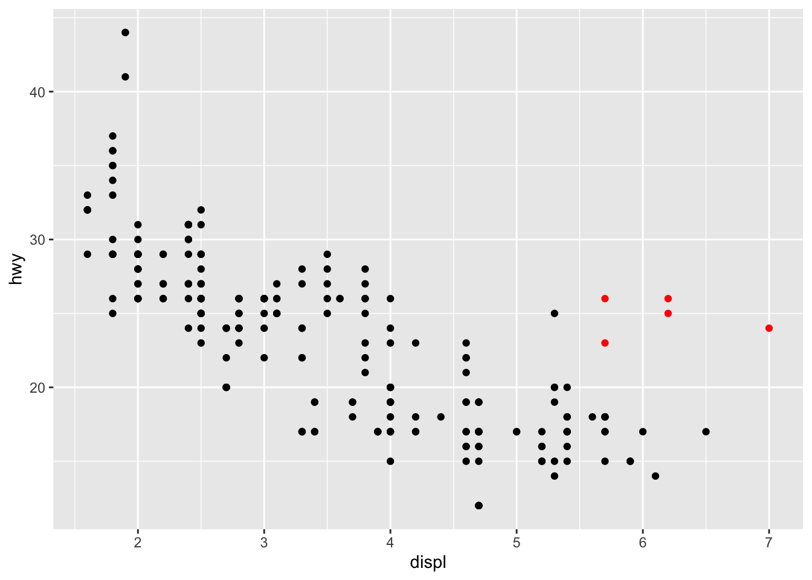
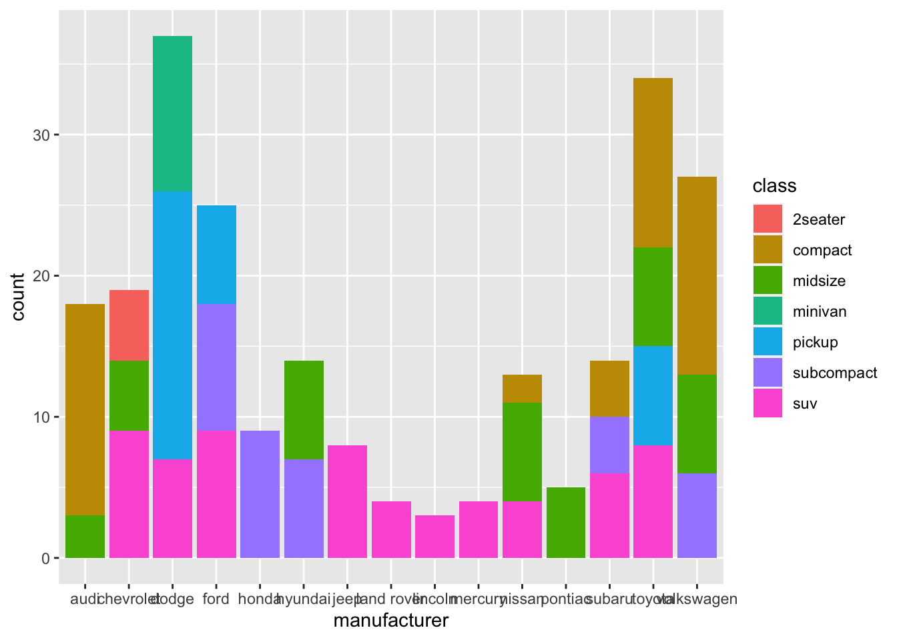

# load packages
library(tidyverse)Exercise 1: Data Visualisation
Part 1
1.1 Explore the mpg dataset
Start a new R-script within your R-project, and load the library ‘tidyverse’.
Look at the data:
mpgExplore the mpg dataset, using functions like summary(), dim(), head() to answer the following questions:
- How many rows and columns does it have?
- What do the different variables describe? Inspect using the R-help:
?mpg - What is the difference between variables like e.g. ‘model’, ‘trans’ and ‘displ’, ‘hwy’?
Solution
- How many rows and columns does it have?
dim(mpg)[1] 234 11The dataset has 234 rows and 11 columns.
- What is the difference between variables like e.g. ‘model’, ‘trans’ and ‘displ’, ‘hwy’?
We can use str(mpg) to take a look at the structure of the dataset. This tells us that model and trans are variables of type character, these are discrete variables, i.e. they can only take certain values. In contrast, displand hwy are numeric variables, they can have values on a continues scale.
1.2 Create ggplot-figures
- Create a scatterplot of ‘hwy’ vs. ‘cyl’.
- Save the plot as pdf and find it in your working directory
Solution
- Create a scatterplot of ‘hwy’ vs. ‘cyl’.
- Save the plot as pdf and find it in your working directory
ggplot(data = mpg, aes(x = hwy, y = cyl)) +
geom_point()
ggsave("hwy_vs_cyl.pdf")1.3. Investigate ‘Outliers’
Fuel efficiency (hwy) declines with enginge size (displ). However, there is a few cars that have a higher efficiency than expected from this general trend (highlighted in red). Can you explain these cars?
Use your knowledge of the mpg-dataset and your ggplot skills to identify this group of cars.

Solution
We can map different additional variables. For example
ggplot(data = mpg, aes(x = displ, y = hwy, color = class)) +
geom_point() 
Mapping class by colors we can see that all these cars are of 2-seaters.
Part 2
2.1 Using aestethics: aes()
Recreate the scatterplot of displ vs. hwy. Include further variables making use of additional mappings, e.g. color, size or shape.
- Try to include information on the number of cyclinder (cyl), the type of car (class). What pattern can you identify?
Solution
mpg %>%
ggplot(aes(x = displ, y = hwy, color = class)) +
geom_point(aes(size = cyl))
- Can you use the different aesthetics for all types of variables? What type of aesthetics are useful for which type of variables?
Solution
Not all types of variables work for all kind of variables. For example, shape cannot be used to map continuous variables, try out the examples below.
- Create the two figures below and check out the color scales. What is the difference and what is the reason for it? What happens if you substitute
color = yearbycolor = as.factor(year)?
mpg %>%
ggplot(aes(x = displ, y = hwy, color = year)) +
geom_point()
mpg %>%
ggplot(aes(x = displ, y = hwy, color = drv)) +
geom_point()
Solution
In the first figure, yearis treated as a continous variable, therefore a continuous color scale is used in the figure. By applying as.factor() we change the variable into a discrete data type. The dataset contains only data of two years (1998, 2008), which is why the resulting mapping contains two levels of color.
2.2 Moving on beyond the scatter
- Summarize the number of cars of each manufacturer in a figure and try to take the different classes into account. Hint:
geom_bar()might be your friend.
Solution
We can create a barplot, which displays the number of cars by each manufacturer. In addition, we can distinguish different car classes for each manufacturer by using fill = class.
ggplot(data = mpg, aes(manufacturer, fill = class)) +
geom_bar()Boxplots are really useful since they contain a lot of information. Use boxplots to investigate whether different different fuel types (‘fl’) have different efficiency (hwy).
Use facets to go into more detail.
Solution